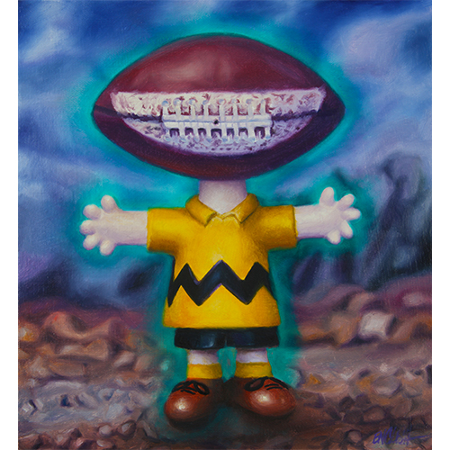
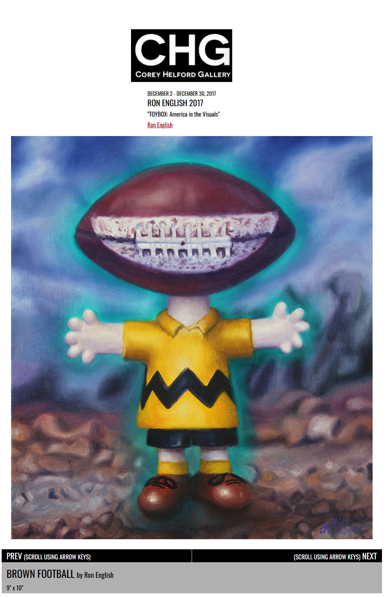

Exhibitions
TOYBOX: America in the Visuals, Corey Helford Gallery, Los Angeles, California, US, December 2, 2017–January 6, 2018.
Notes
This work appears on Corey Helford Gallery’s artwork page for the exhibition TOYBOX: America in the Visuals, available here, accessed April 11, 2026.
This work references the Peanuts character Charlie Brown, created by Charles M. Schulz; a representative image is available here.
Ancillary Documentation
